Agent-centric-real-to-sim · 归档于 2026-11-05
Vid2Sid
Vid2Sid: Videos Can Help Close the Sim2Real Gap
arXivPDF OpenReview · ICLR wsOpenReview · ICRA Real2Sim2RealOpenReview · ICRA SDRL
归档到 Agent-centric real-to-sim：VLM 在回路里读成对的 sim / real 视频，给仿真器调物理参数；第二相关 Robot learning in simulation（sim2real）。论文说代码将在发表后放出，目前没有找到项目页或代码。
TL;DR
- Problem
- 只有外部相机时，friction、damping、stiffness 要么手调，要么交给 black-box 优化器；后者只看一个误差数，说不出到底哪里不像。
- Idea
- 同一段控制同时驱动仿真和真机，把两段视频、误差和历史交给 Gemini 2.5 Pro，让它说出差在哪并给新参数；跑 10 轮，留最好的一轮。
- Result
- 只测了 2 个系统：肌腱手指（MuJoCo）和软触手（PyElastica）。sim2real holdout 平均名次 1.7 最好（Table I），但 3 列只赢手指（10.9 vs Golden-CD 12.1 px）；触手在空气和水里都是第二（53.0 vs CMA-ES 52.1，73.3 vs BO 71.7），3 个差距都小于 Vid2Sid 自己的 seed std。
Problem
black-box 能把误差压低，却说不出哪个物理量错了；只有相机时更难
Running example · 后面每个 stage 都跟着它走
肌腱手指，seed 2（论文 App F-E 的例子）：真机跑一段正弦控制，Logitech BRIO 1920×1080 · 30 fps 录像，只看指尖 marker；MuJoCo 手指从随机起点 frictionloss 143 · damping 190 · armature 0.38 · density 2.6 开始，振幅 38° / 35°，指尖误差 50.1 px → 想要：一组物理参数，让仿真在没见过的控制 H1–H4 下也贴着真机走，并且说得出改了什么、为什么。
flowchart TD IN["例子输入
真机 tip 视频 + MuJoCo
起点误差 50.1 px"]:::example IN --> A1["手调
专家改默认值"] A1 --> AX["慢，换平台重来
论文无数字"]:::gap IN --> B1["Domain rand.
放宽范围训 policy"] B1 --> BX["不知真实参数
未比较"]:::gap IN --> C1["可微仿真
对仿真器求梯度"] C1 --> CX["要解析梯度
PyElastica 没有"]:::gap IN --> D1["Black-box
BO · CMA-ES 等
只读误差标量"] D1 --> DX["说不出原因
12.2–22.3 px
friction 差 74%"]:::gap
只有 black-box 这条有实验：12.2–22.3 px 是同一 seed 2 上四个优化器的 holdout（Table XIV，Vid2Sid 是 4.9）；"friction 差 74%"是 sim2sim 里 CMA-ES 的 23.1 vs 真值 90.4（Table XXI）。手调、Domain randomization、可微仿真三条只来自 §I–II 的论述，论文没有跑；可微仿真那条说的是触手的 PyElastica，不是手指的 MuJoCo。
根本问题：误差标量里没有"哪里不像"的信息，而不同参数组合能造出几乎一样的运动。 这篇的切入点：让 VLM 直接看成对的 sim / real 视频，把"太慢、阻尼太大"这种观察翻译成参数更新。
Related work
| 相关工作 | 解决什么 | 怎么解决 | 和本文的区别 |
|---|---|---|---|
| 同一问题 · 别的解法 | |||
| Black-box 优化 BO、CMA-ES、Nelder-Mead、Golden-CD | 在 bounds 里搜物理参数 | 把仿真当函数，只读误差数 | 只有一个数、要调超参 → 本文读视频，每轮给 rationale，无优化器超参 |
| 迭代标定（本文所属） SimOpt、Du et al.、BayesSim、TuneNet | 用真机经验修正仿真参数 | 调分布、从 pixel 预测更新、概率推断、残差修正 | 更新规则是学出来或算出来的 → 本文换成 VLM 的语言诊断；论文只列举，没做对比实验 |
| 可微仿真 gradSim、Dubied et al. | 用梯度辨识参数 | 对仿真器求解析梯度 | 依赖可微或自写 adjoint → 本文只要仿真器能出画面 |
| Domain randomization Tobin、Peng、OpenAI | 让 policy 耐受参数偏差 | 训练时随机化物理参数 | 绕开辨识，看不到真实属性 → 本文直接估参数 |
| 相似做法 · 别的问题 | |||
| LLM / VLM 做高层机器人推理 SayCan、Eureka、Yu et al.、Patel et al.、Wiedemer et al. | 规划、reward、场景级 randomization、物理推理 | 模型写计划或 reward，语言指导随机化 | 停在高层，没碰 low-level system ID → 本文从画面直接给数值，并守 bounds 和历史 |
来源：论文 §I、§II Related Work、§IV-E。除了核对 venue，未另行检索。
Level 1 · Big picture
两层：perception 把视频变成轨迹和误差，reasoning 让 VLM 看视频改参数
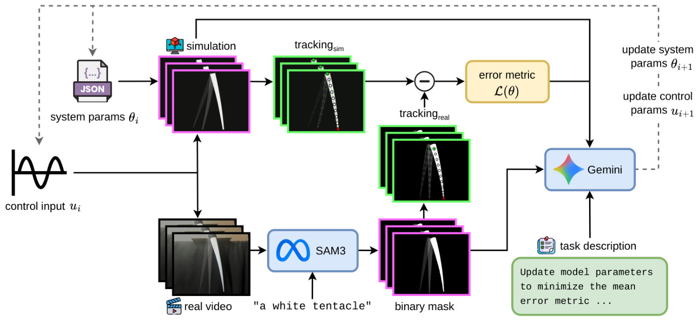
图里的符号
| 符号 | 白话 | 例子里的值 |
|---|---|---|
| θi（system params） | 第 i 轮的物理参数 | 143 / 190 / 0.38 / 2.6 |
| ui（control input） | 第 i 轮发给电机的控制 | 两个关节的振幅 38° / 35° |
| trackingsim、trackingreal | 从两段视频抽出的轨迹 | 每帧指尖的 (x, y) |
| 𝓛(θ)（error metric） | 两条轨迹的平均绝对差 | 50.1 px |
| θi+1、ui+1 | Gemini 给的下一轮参数和控制 | 25 / 30 / 0.8 / 5.0，25° / 30° |
怎么读这张图
- 左边 "system params θi" 和 "control input ui"：这一轮的参数和控制。竖向双箭头表示同一个控制同时送给仿真和真机。
- 上路 "simulation" → "trackingsim"：仿真渲染出视频，再抽轨迹。
- 下路 "real video" → "SAM3" → "binary mask" → "trackingreal"：真机视频按文字 prompt 分割。这是触手的路；手指不用 SAM3，靠 marker 颜色（§III-D）。图里写 "a white tentacle"，App G 实际用的是 "the white triangular tentacle"。
- 中间 "−" → "error metric 𝓛(θ)"：两条轨迹相减得到一个误差数。
- 右边 "Gemini"：输入是 simulation 视频（顶上长箭头）、误差、"task description"，以及下路接来的箭头。
- 虚线 "update system params" 和 "update control params"：Gemini 的输出回到左边，开始下一轮。
图里 Gemini 的真机输入接在 binary mask 上，App F 却写输入是两段视频。论文没说明喂的是原视频还是 mask；App H-E 说 SAM3 抖动会污染 VLM 读的视频信号，所以触手上可能是 mask 或叠加图（我的推断）。
flowchart LR P["Perception
两段视频 → 50.1 px"]:::example --> R["Reasoning
#quot;太慢、阻尼太大#quot;"]:::win R --> O["Output
θ* + 每轮的理由"]
Level 2 · Stages
4 个 stage，外加一个贯穿的 10 轮闭环
flowchart TD IN["Input
θ = 143 / 190
0.38 / 2.6
u = 38° / 35°"]:::example --> S1 S1["1 · Run both
MuJoCo + 真机，同一 u"] --> S2["2 · Extract trajectories
HSV marker → tip (x, y)"] S2 --> S3["3 · Score
互相关对齐 → 50.1 px"] S3 --> S4["4 · VLM diagnose
friction 143 → 25"]:::win S4 -->|"下一轮"| S1 S4 --> OUT["Output θ*
10 轮里最好的一轮"] click S1 href "#stage-1" click S2 href "#stage-2" click S3 href "#stage-3" click S4 href "#stage-4"
点击 stage 展开 Level 3 细节；循环本身、clamp、留最好的一轮和 active learning 见 贯穿全程的闭环。
Level 3 · Details
每个 stage 的细节
Stage 1 Run both · 同一控制驱动仿真和真机 参数 θ + 控制 u → 仿真视频 + 真机视频
- Why：差异只有在"同一输入、不同响应"下才看得出来。
- 控制：正弦 u(t) = A sin(2πft + φ)，可重复、有界；振幅、相位、settling time 的差异反映物理参数（§III-B）。
- 仿真器：只要求能出画面。手指是 MuJoCo，PD 控制，kp = 1000 N/rad 固定；触手是 PyElastica 的 Cosserat rod，60 段。
- 调什么：手指 4 个（friction loss、damping、armature、link density）；触手空气 4 个（E、ρ、ν、γ）；触手水中只调 3 个环境量（ρf、C⊥、C∥）。
- 真机：Dynamixel 按固定频率收位置指令；回 home → 停 2 s → 运动 10 s 并录像 → 存时间戳（§III-C）。
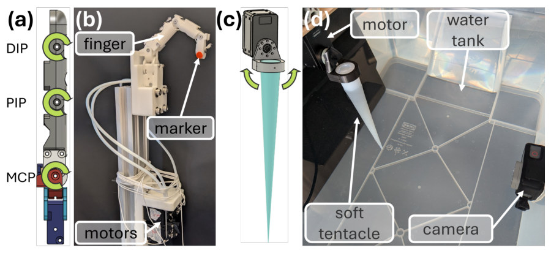
怎么读这张图
- (a) DIP / PIP / MCP：手指 CAD 的三个关节。MCP 由一个电机拮抗驱动；PIP 和 DIP 耦合，由第二个电机驱动，靠弹性绳回位。
- (b) "finger"、"marker"、"motors"：实物。红点 marker 就是例子里要跟踪的指尖。
- (c)：触手 CAD，电机绕基座摆动。
- (d) "soft tentacle"、"water tank"、"camera"：水箱里的硅胶触手和侧面的 GoPro。
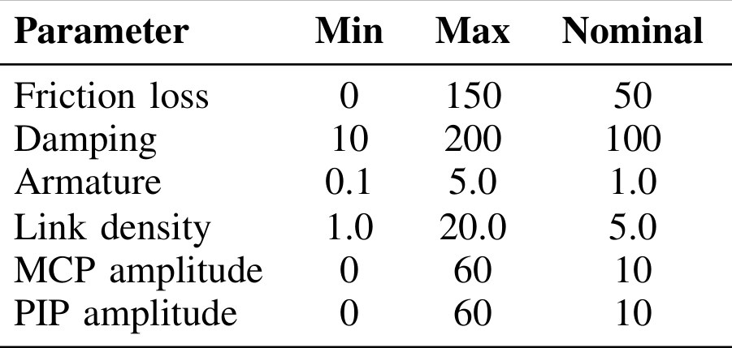
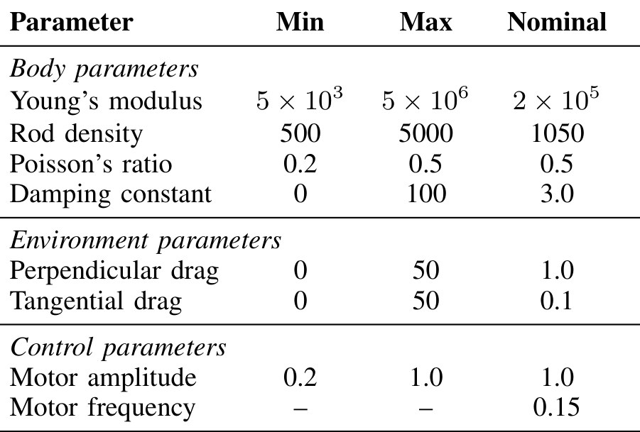
flowchart LR a["同一 u
38° / 35°"] --> b["MuJoCo 渲染
143 / 190 / 0.38 / 2.6"] a --> c["真机 + BRIO
1920×1080 · 30 fps"]
Running example 在这一步
两台 Dynamixel XC330-T288-T 经 Bowden cable 拉手指；同样的振幅 38° / 35° 发给 MuJoCo 模型，得到两段视频。
Stage 2 Extract trajectories · 从视频抽轨迹 两段视频 → 两条结构相同的轨迹
- Why：没有力和状态传感器，只能从画面里取可比较的量。
- 手指：裁固定 ROI → HSV 阈值 → 最大连通域的质心，每帧一个点（§III-D2）。
- 触手：SAM3 在第一帧用文字 prompt 分割并传播 → 空 mask 用邻帧插值 → medial axis → 沿弧长取 10 个点。
- 仿真一侧：直接给出 centerline，不走 SAM3。
- 可靠性：文字 prompt 97.2%，point 98.5%，ROI 94.1%（Table XI）。文字失败改用图像中心的 point prompt，再失败就跳过这一轮（App G-C）。
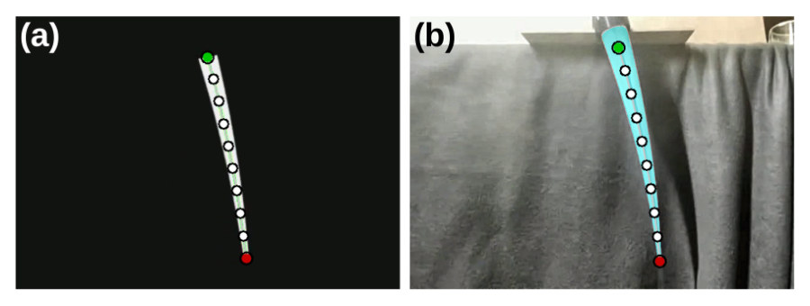
怎么读这张图
- (a)：仿真画面。绿点是基座，红点是尖端，白点是沿弧长等距的中间点。
- (b)：真机帧，青色是 SAM3 的 mask，同样 10 个点。两边点数相同，才能逐点相减，不用人工标注。
flowchart LR a["裁 ROI
工作区"] --> b["HSV 阈值
红色 marker"] b --> c["最大连通域质心
tip (x, y)"]
Running example 在这一步
手指不走 SAM3，每帧只留红色 marker 的质心。论文说一个点够用，因为运动学结构已经限制了手指的构型。
Stage 3 Score · 对齐并算误差 两条轨迹 → 一个 MAE（px）
- Why：录像延迟会造成时间漂移，不对齐的话误差里混着时序偏差。
- 对齐：互相关，lag 上限 1 s。
- 坐标：在 matched camera viewpoints 下比 2D 像素，触手再做弧长归一化。
- 指标：手指是所有帧上指尖距离的平均；触手是所有帧、10 个点的距离平均（Eq. 2–3）。用 MAE 而不用 RMSE，因为它对离群点不那么敏感。
- 丢弃：每段录像的前 5 s 不算，去掉 transient。论文说运动 10 s，而 Fig. 4 的时间轴到 16 s，实际窗口没说清。
flowchart LR a["互相关对齐
lag ≤ 1 s"] --> b["丢前 5 s
去 transient"] b --> c["MAE
50.1 px"]
Running example 在这一步
第 1 轮指尖误差 50.1 px。这个数同时进两个地方：决定是否刷新 best-so-far，以及写进给 VLM 的 prompt。
Stage 4 VLM diagnose · 诊断并提议 视频 + 参数 + 误差 + bounds + 历史 → 新参数 + 理由 + 置信度
- Why：这是唯一拿得到"哪里不像"这种信息的环节，也是和 black-box 的核心区别。
- 模型：Gemini 2.5 Pro，默认解码（temperature 1.0、top-P 0.95），所有 seed 和平台不变（Table X）。论文只试了这一个 VLM。
- 输入：两段视频、当前参数、metrics、bounds、历史表，加可选的 chain-of-thought 指令。视频 token 按 1 fps 估算（App F-B）；若真按 1 fps 采样，0.35 Hz 的运动一周期不到 3 帧（我的推断）。
- 输出：strict JSON：
analysis、每个参数的suggested_value和reason、confidence（0–1）。 - 耗时：每轮约 11 s，约 $0.014（App F-B）。
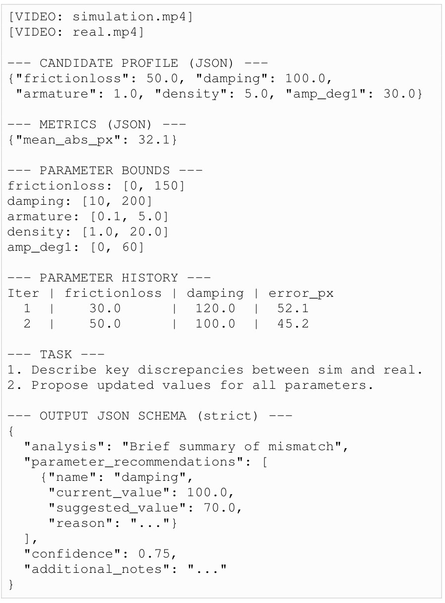
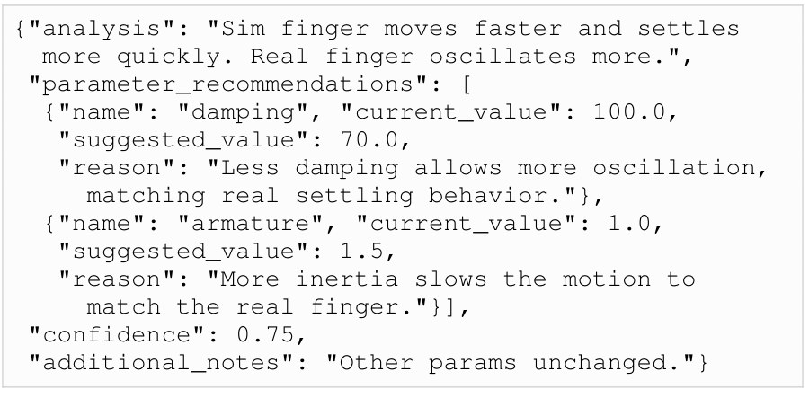
怎么读这张图
- "[VIDEO: …]"：两段视频排在最前面。
- "CANDIDATE PROFILE"、"METRICS"、"PARAMETER BOUNDS"：当前参数、误差、允许范围。
- "PARAMETER HISTORY"：前几轮的参数和误差，就是 in-context learning 的部分。
- "TASK" 和 "OUTPUT JSON SCHEMA"：先描述差异，再给全部参数的新值。
flowchart LR a["看成对视频
#quot;sluggish#quot;"] --> b["诊断
阻尼太大"] b --> c["给新值 + 置信度
damping 190 → 30
confidence 0.7"]
Running example 在这一步
VLM："The simulation finger is significantly slower and more heavily damped than the real hardware."
一步改全部 6 个值：frictionloss 143 → 25 · damping 190 → 30 · armature 0.38 → 0.8 · density 2.6 → 5.0 · 振幅 38° → 25°、35° → 30°，confidence 0.7，误差 50.1 → 20.7 px（−59%）。
同一步振幅也变小了，所以这 59% 里有多少来自物理参数，论文没有分开（我的推断）。
再来一个失败的：seed 1 第 2→3 轮，VLM 说 "underdamped"，把 damping 从 25 提到 65，confidence 0.85，误差却从 11.4 涨到 22.5 px（+97%）。诊断方向说得通，幅度过头。
贯穿全程 10 轮闭环（Algorithm 1） 起点 θ₀、u₀ → 训练误差最低那一轮的 θ*
- Why：VLM 有随机性，后几轮可能退步，所以不能只取最后一轮。
- 预算：固定 K = 10 轮。训练误差约 5 轮内到平台（§V-B）。
- Clamp：VLM 给的值越界就夹回 bounds。
- Best-so-far：记录误差最低的一轮，最后返回它。前期的大修正因此不会被后期失误抹掉。
- Active learning：VLM 还能改控制振幅，引出更有信息量的运动。触手范围 0.2–1.0 rad，手指 0–60°，频率不动。只有 Vid2Sid 有这个自由度：§IV-E 说所有方法优化同一组 θ。
- 防退化：防止优化器靠缩小运动来压低像素误差，论文给两道防线：振幅下限和固定的 holdout 控制。按 Table V、XX 手指下限其实是 0，只有触手有 0.2 rad。
flowchart TD a["跑 + 抽轨迹 + 算误差
第 1 轮 50.1 px"] --> b["刷新 best-so-far
训练最低 10.6 px"] b --> c["VLM 提议 + clamp
第 2 轮 20.7 px"] c -->|"未到 10 轮"| a c -->|"10 轮结束"| d["返回 θ*，跑 holdout
H1–H4 均值 4.9 px"]:::win
Running example 在这一步
seed 2：50.1 → 20.7 px → 10 轮内最低训练误差 10.6 px（Table XII）→ holdout 4.9 px（Table XIV），是所有方法里最好的单个 seed。振幅一路在 21°–39° 和 24°–46° 之间变化（Table XX）。
然后换一个身体：同一个循环用在软触手上，感知换成 SAM3，调 E、ρ、ν、γ；再放进水里，只调流体参数。这两步见 E5。
Recap：例子覆盖了论文的哪些 idea
| 论文里的 idea | 例子里在哪体现 |
|---|---|
| Perception 和 reasoning 两层 | Stage 2–3 给出 50.1 px，Stage 4 说"太慢" |
| Simulator-agnostic | Stage 1：手指 MuJoCo；换身体后是 PyElastica |
| Foundation-model perception | 手指用 marker；换到触手才走 SAM3 文字 prompt（97.2%） |
| 互相关对齐 + MAE | Stage 3 |
| VLM 诊断 + rationale + confidence | Stage 4：143 → 25，confidence 0.7 |
| 高置信也会错 | Stage 4：seed 1 的 +97%，confidence 0.85；统计见 E6 |
| Clamp 和 best-so-far | 闭环：最低训练误差 10.6 px 那一轮被留下 |
| Active learning over control | 闭环：振幅 38° / 35° → 25° / 30° → … |
| Holdout 控制 H1–H4 | 闭环末尾：4.9 px；见 E1 |
| sim2sim 恢复真值 | 真机没有真值，例子走不到，见 E4 |
| 三种 regime、水下 stress test | 换身体之后，见 E5 |
Results
在这两个系统上 Vid2Sid 和 black-box 基本打平；多出来的是每轮的理由，以及 sim2sim 里更稳地靠近真值
顺序同论文：E1 没见过的控制下准不准 → E2 收敛多快 → E3 哪个部件有用 → E4 参数是否真的对 → E5 什么时候优化器不再重要 → E6 VLM 的置信度能不能信 → E7 多花多少。比的是 holdout 像素误差和参数相对误差，不比 policy 成功率。
测了什么
| 系统 | 仿真器 | 调的参数 | 观测 |
|---|---|---|---|
| 肌腱手指 3 连杆 PLA，2× XC330-T288-T，Bowden cable | MuJoCo 刚体 | friction loss、damping、armature、link density | BRIO 1920×1080、30 fps；指尖 marker |
| 软触手 · 空气 DragonSkin 10 Slow 硅胶，1× XW430-T200R | PyElastica Cosserat rod，60 段 | E、ρ、ν、γ | BRIO 640×480、25 fps；SAM3 10 点 centerline |
| 软触手 · 水中 同一触手，浸入水箱 | PyElastica + 流体阻力 | ρf、C⊥、C∥；body 冻结 | GoPro Hero 6 1920×1080、120 fps（Superview） |
据 §III-A、§IV-A、App A–C 整理。两个平台都只做正弦摆动，论文里没有抓取、外部物体接触，也没有训练或部署 policy；"sim2real" 在这里指 holdout 控制下的轨迹误差。
E1没见过的控制下，参数还准吗？§V-A · Table I
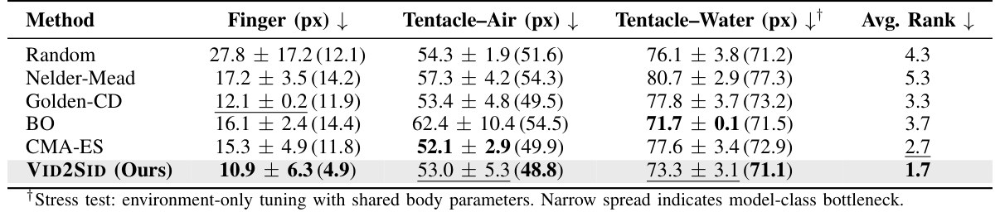
| Setting | Vid2Sid | 最好的 black-box | 谁第一 | 差距 vs Vid2Sid 的 std |
|---|---|---|---|---|
| Finger | 10.9 ± 6.3 | Golden-CD 12.1 ± 0.2 | Vid2Sid | 1.2 px，std 6.3 |
| Tentacle–Air | 53.0 ± 5.3 | CMA-ES 52.1 ± 2.9 | CMA-ES | 0.9 px，std 5.3 |
| Tentacle–Water | 73.3 ± 3.1 | BO 71.7 ± 0.1 | BO | 1.6 px，std 3.1 |
据 Table I 整理。平均名次：Vid2Sid 1.7（1、2、2），CMA-ES 2.7，Golden-CD 3.3，BO 3.7，Random 4.3，Nelder-Mead 5.3。
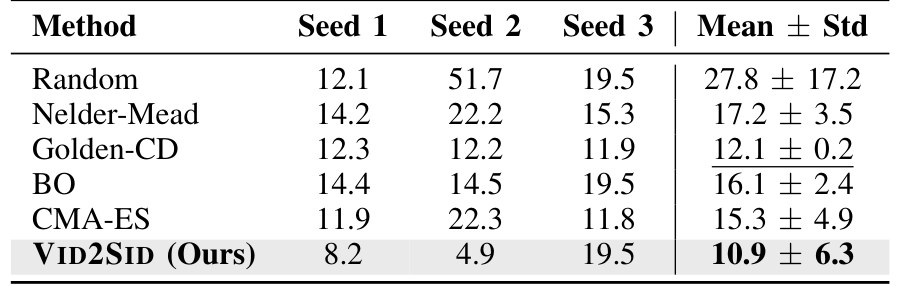
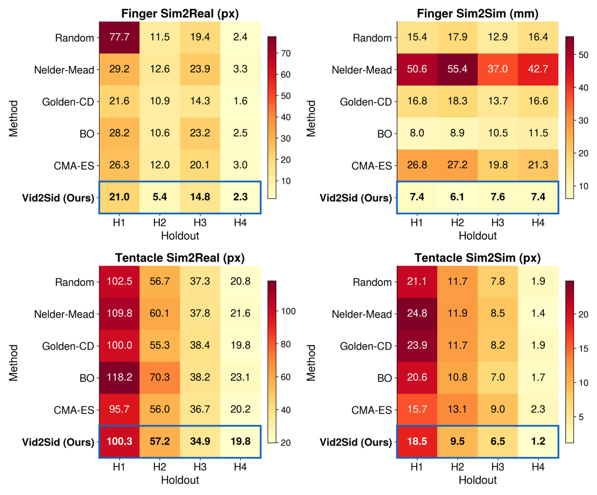
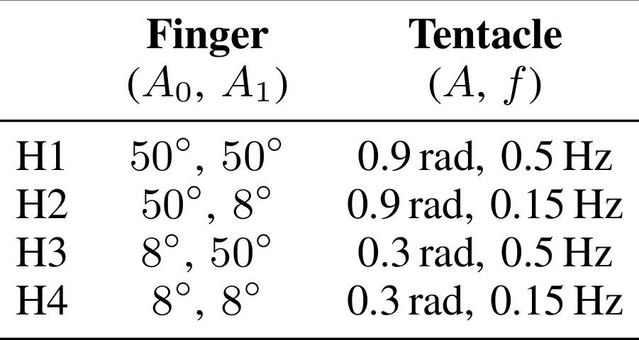
- 说明什么
- 平均名次最好，单列只赢 1/3。手指比 Golden-CD 低 10%；触手两列第二。最好的单个 seed 三列都是 Vid2Sid（4.9 / 48.8 / 71.1 px）。Fig. 9 里手指 H1、H2 最好，H3、H4 输给 Golden-CD（14.8 vs 14.3，2.3 vs 1.6）。
- 在故事里
- 撑起 "matching or exceeding black-box"。这个措辞是准确的；"best" 只在平均名次的意义上成立。
- 指标
- Holdout MAE（px）：手指是指尖，触手是 10 点 centerline。每个 seed 取训练误差最低的一轮，跑 4 个 holdout × 3 次硬件重复；± 是 3 个 seed 之间的 std。
- 怎么评测
- Baselines：Random、Nelder-Mead、Golden-CD、BO（GP Matérn 5/2 + EI，先 3 个随机点）、CMA-ES（σ = 0.3）。bounds、起点、10 轮预算相同。
- 对 baseline 有利：CMA-ES 一整代算一轮（d = 4 时每代 8 个，共 80 次评估，我按 App E 的公式算的）；水中所有方法都用 Vid2Sid 找到的 body 参数。
- 对 Vid2Sid 有利（我的推断）：只有它能改控制；预算只有 10 次，BO 去掉随机点只剩 7 步，Nelder-Mead 在 4 维上要花 5 次建初始 simplex。论文没测更大的预算。
- N = 3，没有显著性检验。Random 在触手空气上只比 Vid2Sid 高 2.5%（54.3 vs 53.0），这一列区分度很低（比例是我算的）。
- 像素不能跨列比：三列的分辨率和指标都不同，论文没换算成毫米。
- 论文只把手指 seed 3 称为 poor seed。但 19.5 同时出现在 Random、BO、Vid2Sid，并以 19.51 出现在 w/o History、w/o CoT（Table XVII）。五处相同，像是都留在了同一个参数上；所有方法起点相同，那很可能就是起点（我的推断）。Table XX 里 seed 3 第 1 轮振幅只有 8° / 6°。
E2收敛有多快？§V-B · Fig. 8
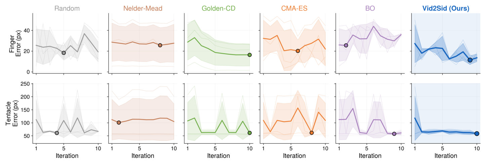
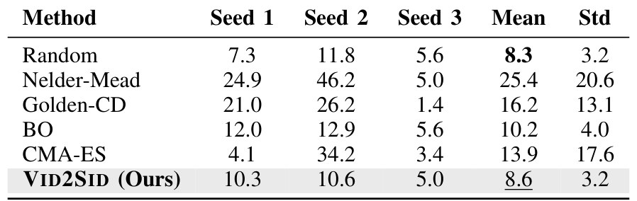
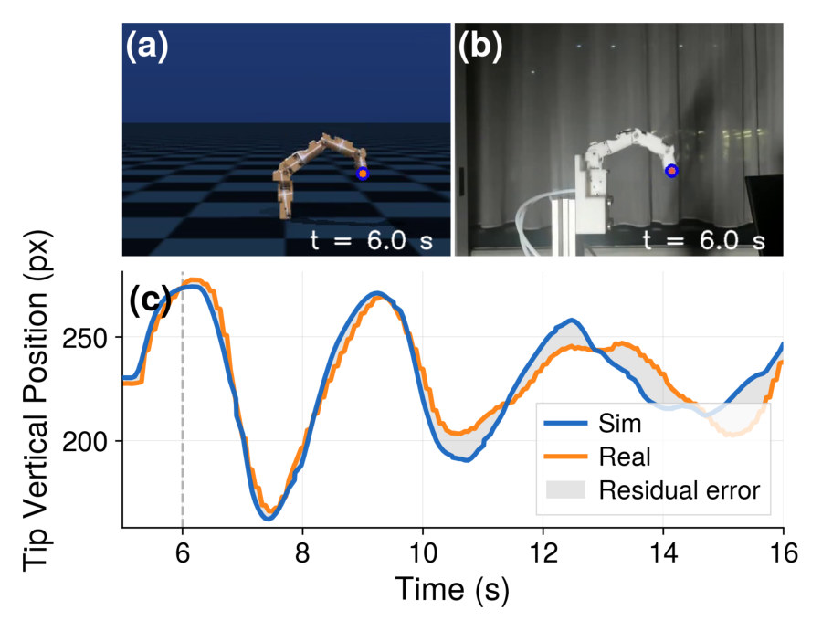
- 说明什么
- 收敛快，但训练误差不占优。约 5 轮到平台。10 轮内最低训练误差的均值，Random 在两个平台都是第一（8.3、55.9），Vid2Sid 是 8.6、57.5（Table XII、XIII）。
- 在故事里
- 解释机制：早期靠明显的视觉差异做大修正，接近收敛后建议变保守、变不可靠，所以要留 best-so-far。
- 指标
- 训练 MAE（px）。
- 怎么评测
- 3 个 seed，同 E1 的设置。论文自己提醒：误差收敛不等于参数收敛。
- 训练误差不预测 holdout：Vid2Sid seed 3 训练最低（5.0）而 holdout 最差（19.5），seed 2 反过来（10.6 → 4.9）。这是我对比 Table XII、XIV 得到的；Vid2Sid 改了控制，各轮的训练误差本来就不完全可比。
E3视频真的有用吗？§V-C · Fig. 5
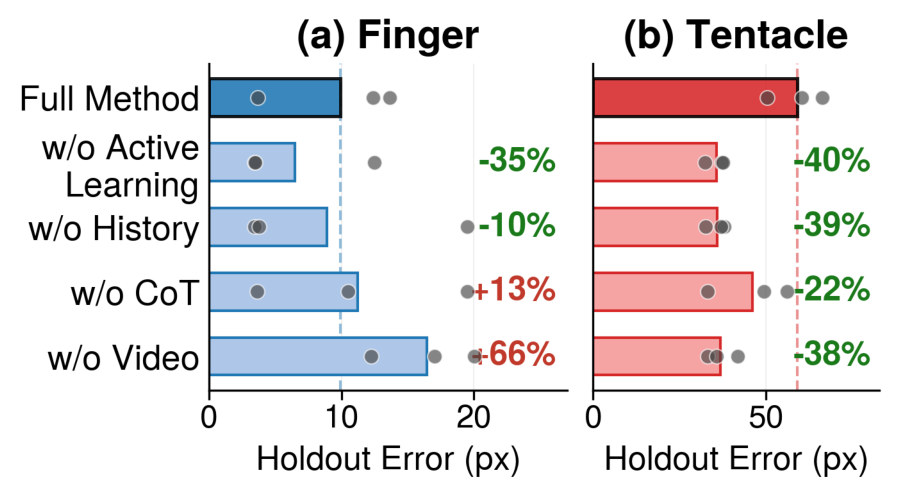
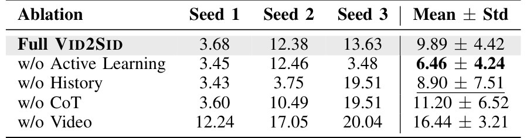
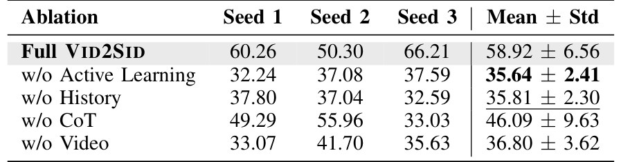
- 说明什么
- 视频的作用取决于平台：手指去掉视频 +66%，触手去掉视频 −38%。手指上 w/o Video 16.44 vs Full 9.89。触手上去掉任何一个部件都更好（35.64–46.09 vs 58.92）。完整方法在两个平台上都不是最好的配置；手指最好的是 w/o Active Learning（6.46）。
- 在故事里
- 标题 "Videos Can Help" 的直接证据只有手指这一列；触手是反例，论文写明了。论文的解释是 observability：手指的 damping、friction 有明显的视觉特征，触手的材料参数被 SAM3 约 3–5 px 的抖动盖住。
- 指标
- 同 E1，每次只改一个因素。w/o Video 是 text-only，保留误差、参数、bounds 和历史。
- 怎么评测
- 每个配置 3 个 seed，百分比都相对这里的 Full 行。
- §V-C 说 history 和 active learning "slightly hurt"，但 −35% 不算 slightly（我的看法）。
- 未解释：Full 行和 Table I 对不上。手指 9.89（3.68 / 12.38 / 13.63）vs 10.9（8.2 / 4.9 / 19.5），触手 58.92 vs 53.0。同一配置差这么多，说明 run 之间的波动不小于 E1 里的差距（我的推断）。
- 未解释：若两张表可比，触手上每个 ablation（35.6–46.1）都低于 Table I 的所有 baseline（52.1–62.4），text-only 的 36.80 比 CMA-ES 低 29%。论文没有把它们放在一起比，也没说是否同一评测（比例是我算的）。
E4参数本身对吗？§V-D · Table II、Fig. 6、Tables XXI–XXII
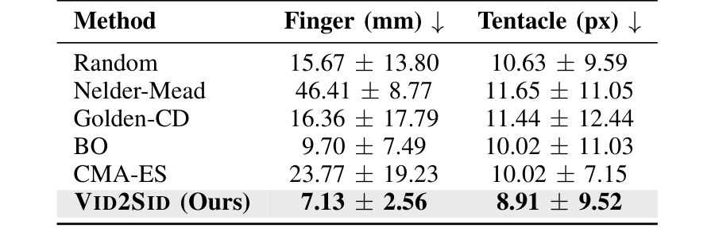
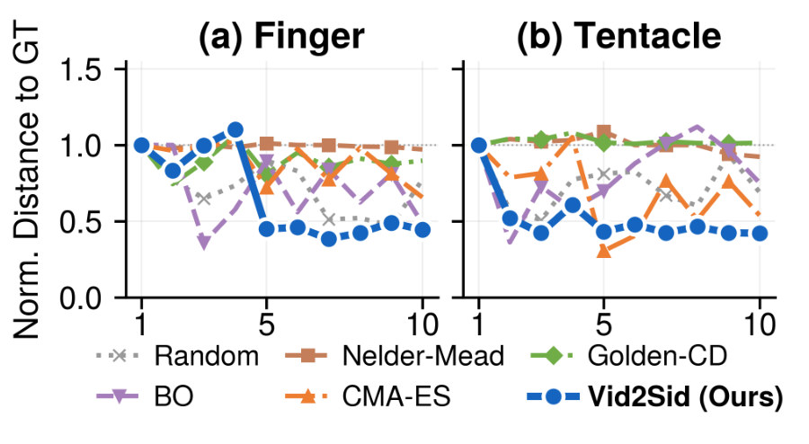
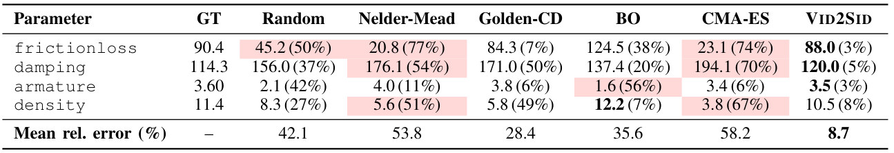
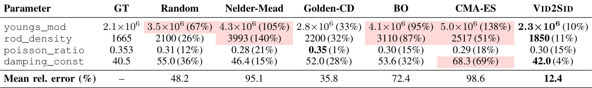
- 说明什么
- 去掉感知噪声和模型误差后，Vid2Sid 的 holdout 和参数误差都最低。Holdout：手指 7.13 vs BO 9.70 mm（−27%），触手 8.91 vs BO / CMA-ES 10.02 px（−11%）。参数相对误差 8.7%、12.4%，baseline 是 28.4–58.2%、35.8–98.6%。Fig. 6 里第 5 轮之后 Vid2Sid 很稳（0.38–0.49、0.42–0.48，我从图上测的），baseline 来回跳。
- 在故事里
- sim2real 没有真值，这里是唯一能验证"理由对应真实物理"的地方。论文的结论：black-box 靠补偿性的参数组合压低误差，例如 CMA-ES 的 frictionloss 差 74%。
- 指标
- Holdout 误差：手指 mm，触手 px，N = 12（3 seed × 4 holdout）。相对误差 = |估计 − 真值| / 真值 × 100。
- 怎么评测
- "真机"换成一个固定参数的仿真，从随机起点开始，预算相同。这是可达性能的上限。
- std 很大（触手 8.91 ± 9.52），Fig. 9 显示触手误差主要来自 H1。
我核对了一下：表和图对不上
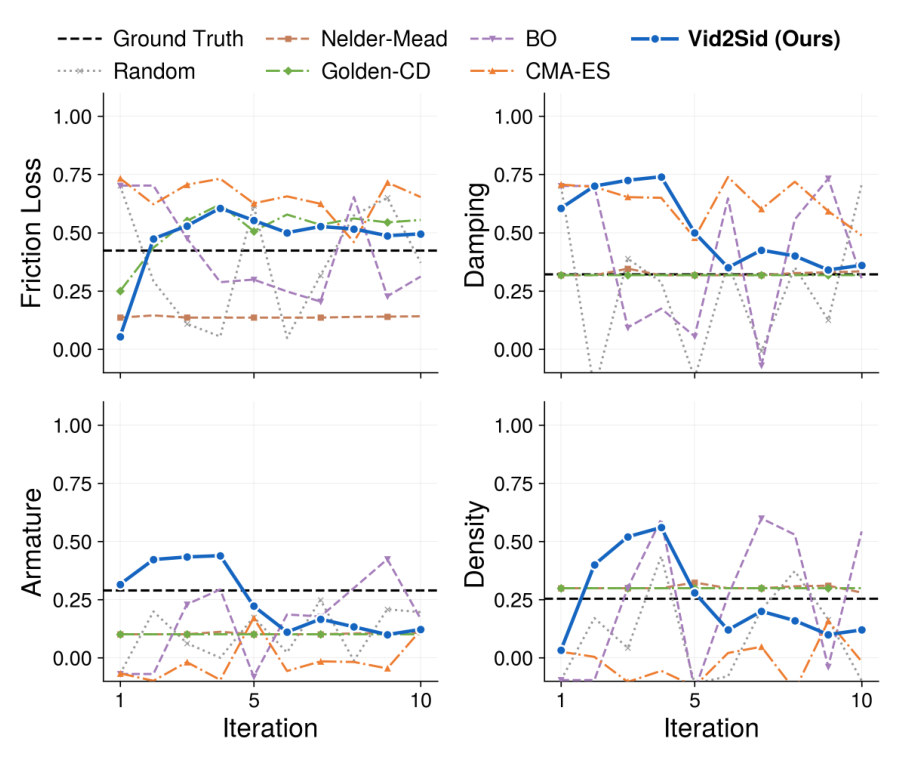
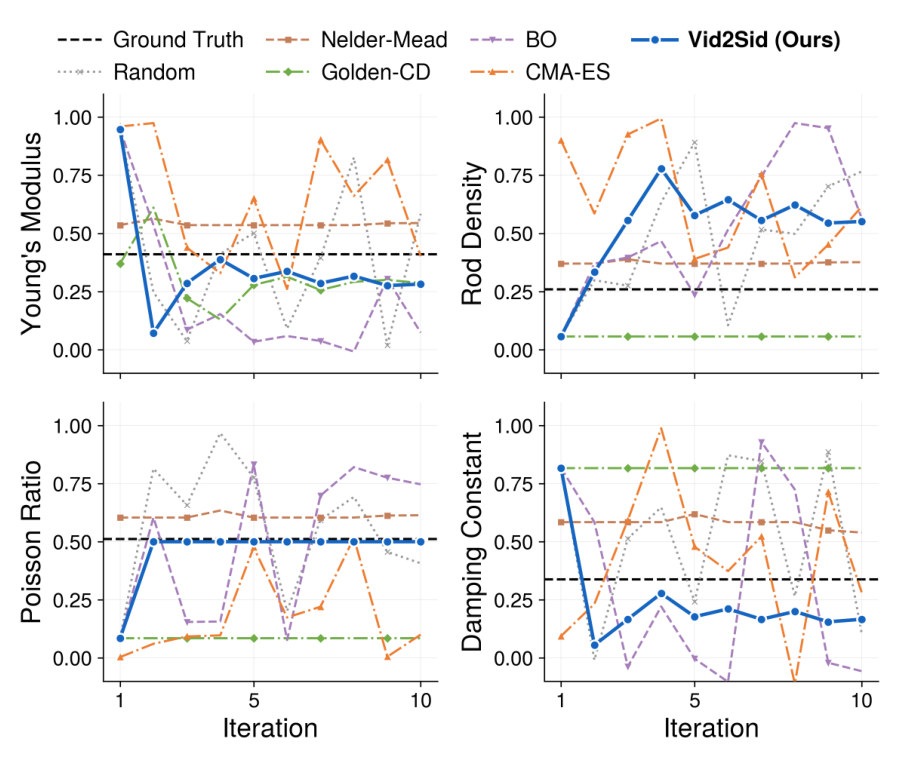
| 触手参数 | 真值 | Table XXII | Fig. 11 第 10 轮（我测） | 表的误差 | 图算出的误差 |
|---|---|---|---|---|---|
| Young's modulus | 2.1×10⁶ | 2.3×10⁶ | 0.282 → 1.41×10⁶ | 10% | 33% |
| Rod density | 1665 | 1850 | 0.551 → 2980 | 11% | 79% |
| Poisson ratio | 0.353 | 0.30 | 0.500 → 0.35 | 15% | 1% |
| Damping constant | 40.5 | 42.0 | 0.166 → 16.6 | 4% | 51–59% |
这张表是我做的，不是论文的。方法：从 PDF 取出原始位图（2331×1970），用每个面板自己的刻度线定标，按颜色找第 10 轮的点，读数约 ±0.02，再用 Table VI 的 bounds 换算。
- 定标没问题：Fig. 11 的虚线有 3 条和 Table XXII 的真值对得上（0.411 / 0.260 / 0.512 vs 0.419 / 0.259 / 0.510）。第 4 条 damping 是 0.338 vs 0.405，所以这一行给了范围。
- 手指更严重：Fig. 10 的 4 条真值线（0.424 / 0.325 / 0.290 / 0.254）和 Table XXI 按 Table V 归一化的值（0.603 / 0.549 / 0.714 / 0.547）全都不同。
- 三张图彼此一致：用 Fig. 10、11 的读数重算到真值的距离，每一轮都和 Fig. 6 差 0.03 以内（第 10 轮 0.45 / 0.44 vs 0.44 / 0.42）。所以和其他数据不一致的是两张表。
- Fig. 11 的 caption 也不符：它说 Vid2Sid 到达了 Young's modulus 和 damping 的真值，但蓝线停在 0.282 vs 0.411、0.166 vs 0.338；真正到真值的是 Poisson ratio。
- 能下的结论：Fig. 6 里 Vid2Sid 比 baseline 稳，这一点成立。但图上它只走完了起点到真值距离的 56–58%，和 "under 13%" 给人的印象不同。两边可能来自不同的 seed 或不同的 run，论文没有说明，我无法判断哪个对。
E5什么时候优化器不再重要？§IV-D、§V-A、§VI
| Regime | 平台 | 现象 | 论文的建议 |
|---|---|---|---|
| 感知干净，仿真器够用 | 手指 | 去掉视频 +66%；holdout 比第二名低 10% | 用带视频的 Vid2Sid |
| 感知有噪声 | 触手 · 空气 | 仍有竞争力，但视频带入约 3–5 px 抖动 | text-only，或退回 black-box |
| 模型错配主导 | 触手 · 水中 | 6 种方法都在 71.7–80.7 px，差距 9 px | 优化器不是瓶颈，要改模型 |
据 §VI 和 Table I 整理，论文 §VI 没有对应的表。
- 说明什么
- 模型表达不了真实动力学时，换优化器没有用。水中 BO 71.7、Vid2Sid 73.3、Random 76.1，Random 比 CMA-ES 和 Golden-CD 还好。
- 在故事里
- 给出论文的 "practical guideline"，也说明 E4 的优势为什么到了真机变小：E4 里模型是对的。
- 指标
- 同 E1。
- 怎么评测
- Shared-body protocol：所有方法用 Vid2Sid 空气标定最好 seed 的 body 参数，只调 3 个环境量（Table VII）。
- 论文把残差归于没建模的流体效应（湍流、涡脱落、浮力）。这是解释，论文没有另做实验验证。
E6VLM 的置信度能信吗？§VI、App F-D · Fig. 7
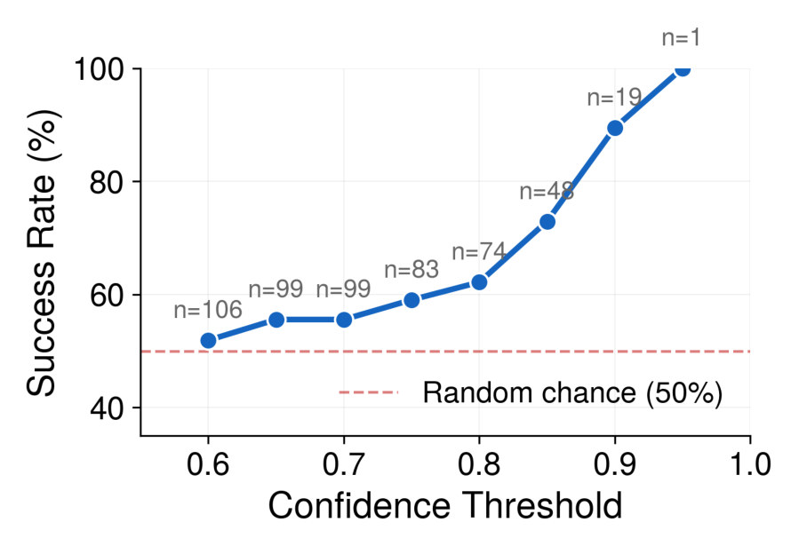
- 说明什么
- 单步建议大约一半有效，高置信才可靠。全部 52%（n = 106），置信度 ≥ 0.9 时 89%（n = 19，占 18%）。低于 0.7 的 7 条无一降低误差。只看误差高于中位数的轮次，成功率 62–77%。
- 在故事里
- 支撑 selective automation：高置信自动用，低置信给人看，连续低置信就停。
- 指标
- 一条建议算成功 = 应用之后误差下降。
- 怎么评测
- n = 106，合并两个平台、sim2sim 和 sim2real，3 个 seed，每 seed 9 轮；排除 2 个初始误差超过 100 px 的不稳定案例。
- 样本小，论文也承认。Stage 4 的 +97% 失败例子置信度就有 0.85。
E7多花多少？§VI、App A-D、App F-B · Table IV
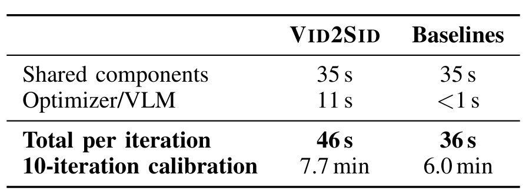
- 说明什么
- 时间多 28%，费用可以忽略。每轮 46 vs 36 s，10 轮 7.7 vs 6.0 min，一次标定约 $0.14。
- 在故事里
- 说明这是离线可用的方案；11 s 的 VLM 延迟排除了实时自适应。
- 指标
- Wall-clock 时间；费用按 token 数和 Gemini 2.5 Pro 单价估算（Table IX），不是账单。
- 怎么评测
- i7-10700K，SAM3 跑在 A100 40GB（Table III）。视频 token 按 258 token / 帧、1 fps 估算。
Limits
局限和开放问题
- 论文自述的失败模式：眩光或遮挡导致分割失败；录像延迟造成时间漂移；VLM 靠缩小运动压误差；VLM 给出不合理的值。对应的保护是 point prompt、互相关、振幅下限、clamp。
- 论文自述的范围：单个固定相机、静态背景；不处理遮挡、光照变化、多机器人。
- 论文自述的优化局限：不保证全局最优，偶尔陷入局部极小；初值极差（Young's modulus 差 100×）时所有方法都失败。
- 只测了 Gemini 2.5 Pro。prompt 设计依赖平台，论文建议新平台先跑小消融（1–2 seed、5 轮）。
- 只能离线：每轮约 11 s VLM 延迟。没有形式化的标定精度保证（App J）。
- 代码：论文说发表后放出，目前没有找到。
- 我的判断：2 个系统、N = 3、没有显著性检验，撑不起"优于 black-box"，只撑得起"打平，并附带解释"。解释的正确性只在 sim2sim 里有检验，而那里的表和图互相矛盾（E4）。
- 我的判断：标题说 "Close the Sim2Real Gap"，实测的是 px 轨迹误差，没有 policy 迁移，也没有接触或抓取。
For Agent-centric real-to-sim
对我们有什么用
- 和 repair loop 同构，但更新方式相反。两边都是"读 sim / real 成对证据 → 模型提改动 → 回放 → 留最好"。Vid2Sid 一步改全部参数，带 bounds 和完整历史；
verify_scene_repair的 friction、mass 是单个物体、单独一次 attempt（mix_physics_and_shape: false）。联合修正带来了 −59%，也带来了 +97%，两种都有代价。可以试一个带 bounds 和历史的小循环，但只对真能改变画面的参数（App J 第 3 条）：我们的物体 friction 低于 pad 值时根本不影响抓握。 - 它的证据不覆盖我们要的量，先抄 E4 的 sim2sim。它辨识的是自由摆动里的关节 friction、damping 和材料刚度，没有物体质量和接触摩擦，所以不能说它解决了我们 assumed 的 mass 和 friction。便宜的第一步：用已知 mass、friction 回放一段当"假真机"，看 GPT-6 能否找回来，并且比参数本身，不只比误差。我们只有一段录像，不能换控制重录，这对应它的 w/o Active Learning，恰好是两张消融表里最好的配置（6.46、35.64 px）。
- 先修几何，再调物理；sim-to-real 的空白它也没填。它的比较建立在 matched camera viewpoints 上，E5 又说感知有噪声时视频帮不上忙，模型错配时换优化器也没用。DROID 相机位姿差约 20 cm、object role 错，都属于这一类，调物理参数大概只会用补偿值掩盖（我的推断）。所以 camera fit 和 role 先过，再动 mass、friction。另外它的 "sim2real" 是 holdout 轨迹误差，不是我们缺的 policy 迁移证据。